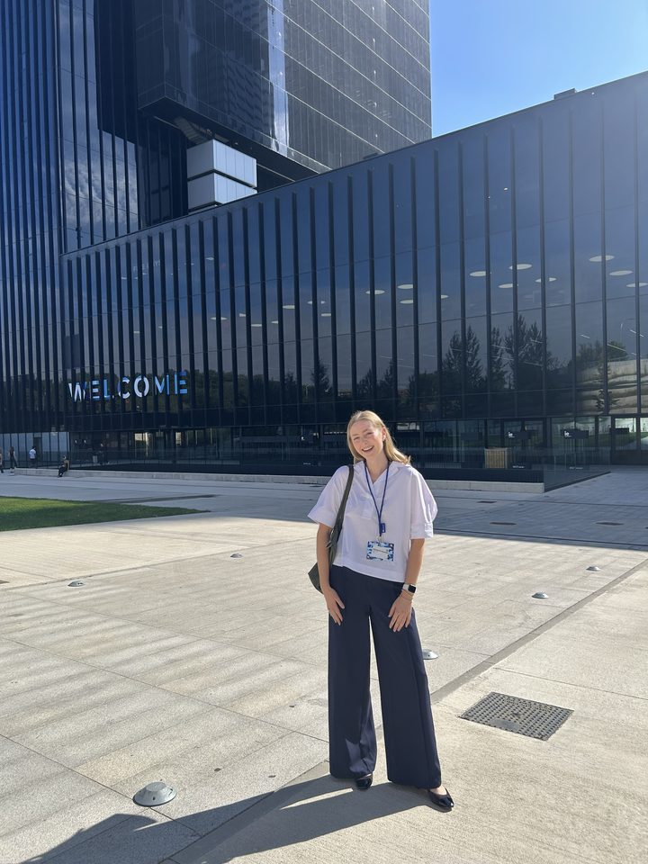
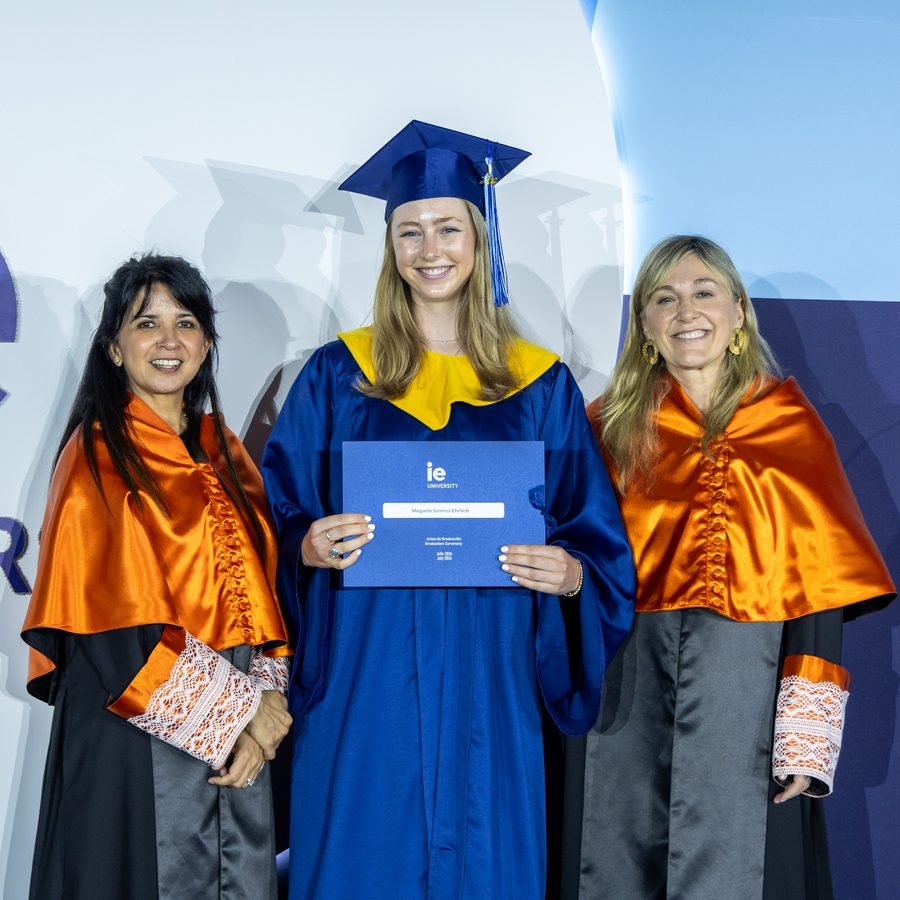
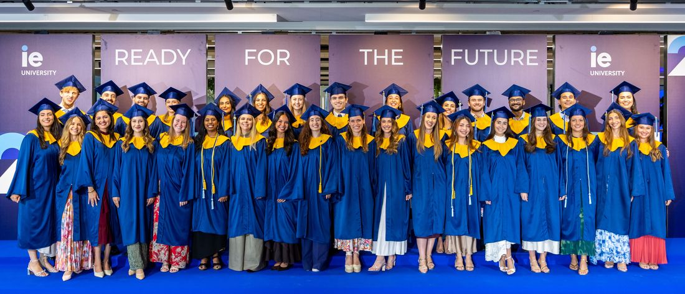
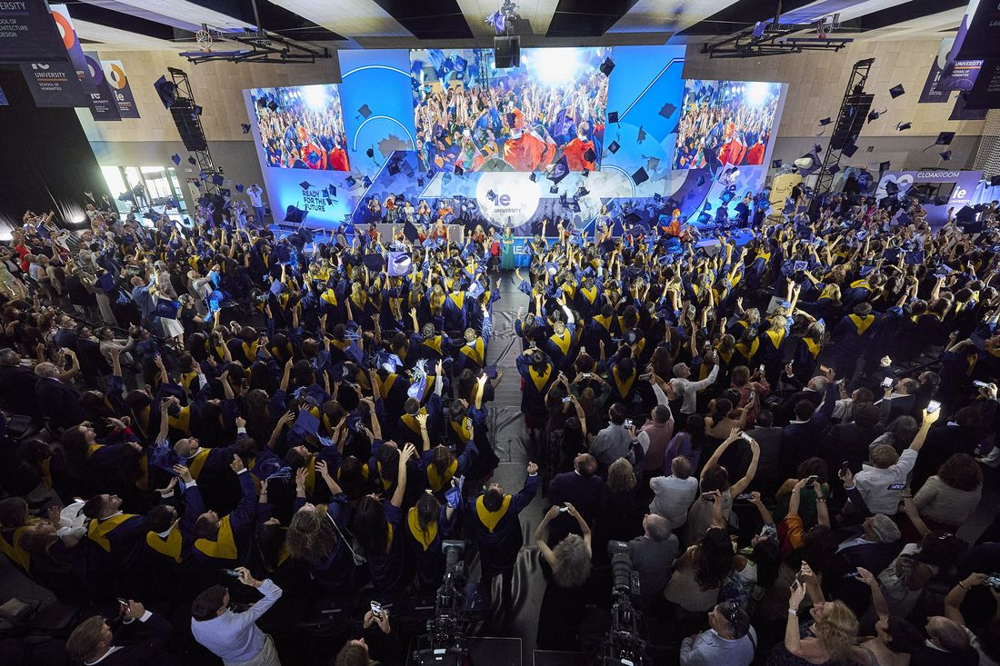

Shaping the strategy and systems that help people and organizations grow.
Master's graduate in Talent Development & Human Resources from IE Business School

I'm a Master's graduate in Talent Development & Human Resources from IE Business School. Over the past three years I've lived, worked, and studied in Madrid, building experience across human resources, consulting, and education.
My corporate consulting projects at IE have spanned graduate onboarding redesign, employer value proposition (EVP) and talent-market analysis, and AI-driven workforce planning for global organizations, including Inditex. Before graduate school, I supported organizational strategy through data analysis for an Austin-based nonprofit and taught English in a Madrid primary school for two years.
Whether embedded on an internal HR team or advising as a consultant, I bring the same toolkit: evidence, structure, and a focus on the employee experience. I passed the SHRM-CP exam in June 2026, and I'm seeking an HR consulting or HR generalist role in Austin, TX, with a long-term interest in HR business partnership and strategic talent management.
Corporate consulting projects from my Master's at IE Business School. Open any project for the full brief, approach, and outcome.
Coursework and applied HR projects from my Master's. Search by keyword, filter by focus area, and open any project for detail.
A path across consulting, education, and the social sector, in Texas and in Spain.
IE Foundation Fellow: awarded honors distinction and scholarship for academic excellence, leadership, and social initiative.
Minor in Business Foundations; certificates in Spanish for Business and in Social Entrepreneurship & Nonprofits. University Honors and College Scholar.
Note: IE grades on a forced curve within each section, with passing grades set at four fixed levels: Honors (4.00, top 15%), Excellence (3.66, next 35%), Proficiency (3.33, next 35%), and Pass (3.00, bottom 15%).



I'm seeking an HR consulting or HR generalist role in Austin, TX. If that sounds like a fit, I'd love to connect.